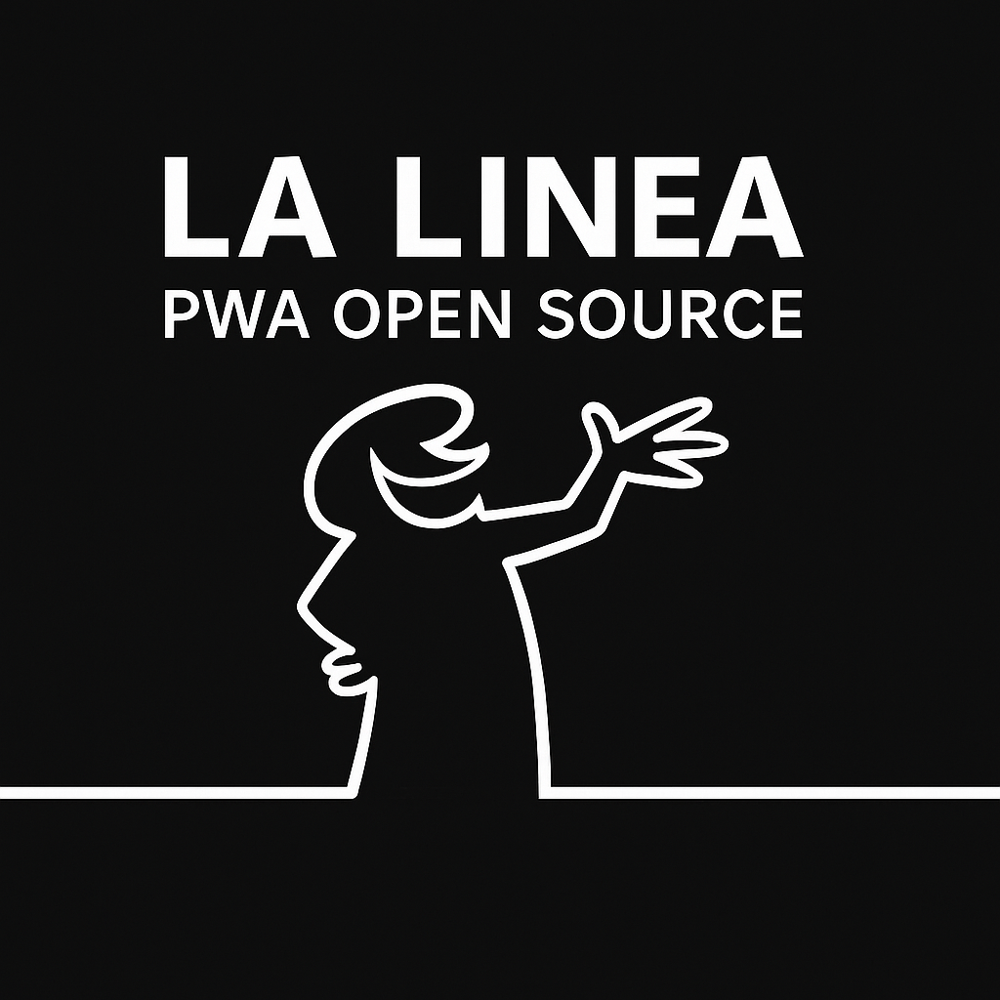

🬠La Linea — Gioco Tributo (B/N)
✨ Caratteristiche
- Stile minimalista in bianco/nero
- Personaggio animato (bocca, braccia)
- Bonus in aria, ponti disegnati dalla mano
- Ostacoli: fiumi, piante, lupi da evitare
- 3 vite, livelli progressivi e difficoltà crescente
- Funziona su laptop, tablet e smartphone
- Installabile offline come PWA
🮠Comandi (IT)
Laptop / PC (tastiera)
- ↠/ → → muovi a sinistra / destra
- Space → salta
- ↓ → fermati
- P → pausa / riprendi
- R → restart
Smartphone / Tablet (touch / pulsanti virtuali)
- Tocca il canvas o il pulsante “SALTA†per saltare
- Usa i pulsanti ↠e → sullo schermo per muoverti
- I pulsanti virtuali appaiono automaticamente su dispositivo touch
- La scritta “spazio†è visibile solo su desktop (nascosta su mobile)
🮠Controls (EN)
Laptop / PC (keyboard)
- ↠/ → → move left / right
- Space → jump
- ↓ → stop
- P → pause / resume
- R → restart
Smartphone / Tablet (touch / on-screen buttons)
- Tap the canvas or the “JUMP†button to jump
- Use the on-screen ↠and → buttons to move
- Virtual buttons appear automatically on mobile devices
- The “space†label is shown only on desktop (hidden on mobile)
📱 Installazione
- Apri il link del gioco nel browser.
- Aggiungilo alla Home / Installa come app.
- Gioca offline, full-screen.
© 2025 — pezzaliAPP — MIT License